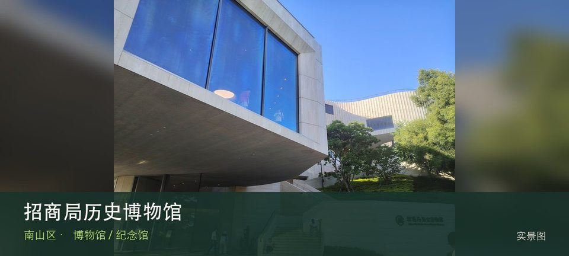

适合谁
适合对该专题有明确兴趣的人，也适合作为高温和雨天行程；开放不明时不宜临时前往。

SHENZHEN GUIDE · 087
蛇口 · 博物馆 / 纪念馆
招商局历史博物馆位于蛇口沿山路，以招商局企业史串联近代航运、港口建设和蛇口工业区开发，能把一家公司放进中国现代化进程观察。这里不是只有一个打卡点：近代招商局航运史提供主要线索，蛇口工业区开发补足另一层现场关系。理解这处场馆，重点不是把所有展柜看完，而是沿着近代招商局航运史和蛇口工业区开发两条线索辨认其专题边界。常设展、开放楼层和时段可能调整，专程前往前仍应核对场馆当天公告。
WHY GO
适合对该专题有明确兴趣的人，也适合作为高温和雨天行程；开放不明时不宜临时前往。
首次游览招商局历史博物馆不求走全，先完成近代招商局航运史这一项观察，再根据同行者体力选择蛇口工业区开发，并保留原路退出方案。
公共交通先到蛇口沿山路片区，再以招商局历史博物馆公开参观入口为终点；校园、园区或预约型场馆须同时核对门禁与开放日。
自驾优先使用招商局历史博物馆所属建筑、园区或邻近正规公共停车场；预约时一并确认车牌登记、门岗和社会车辆准入规则。
全年可安排，尤其适合高温或降雨日；台风、极端天气及布展期仍可能临时调整开放。
NEARBY IDEAS
 授权实景图
授权实景图
海上世界位于蛇口，明华轮、滨海广场、公共艺术和餐饮街区展示蛇口港区更新，夜间氛围浓但历史线索容易被商业景观遮住。
 编辑配图·非现场实景
编辑配图·非现场实景
文天祥纪念公园位于兴海大道与赤湾六路交会处，近48公顷山体公园以文天祥文化纪念和赤湾港区视野构成历史与地形并重的路线。
 编辑配图·非现场实景
编辑配图·非现场实景
深圳市南山区天后博物馆位于赤湾，依托赤湾天后宫讲述海神信仰、海上交通和民间礼俗，初一十五等特殊日历会直接改变开放与现场秩序。